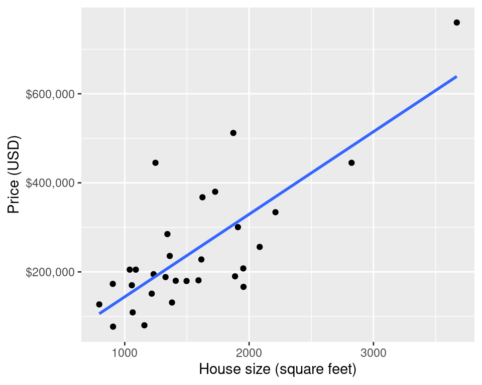
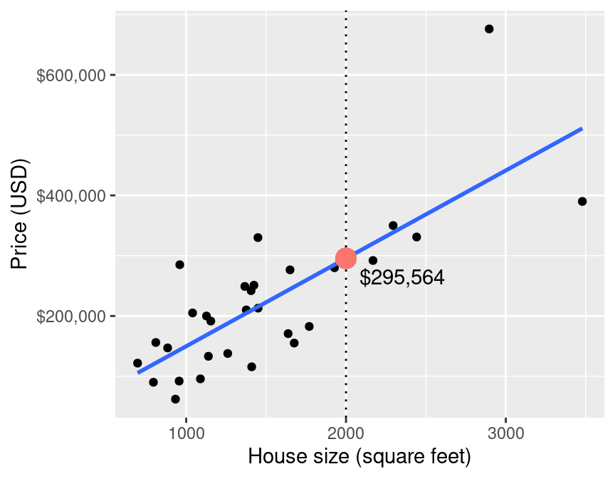
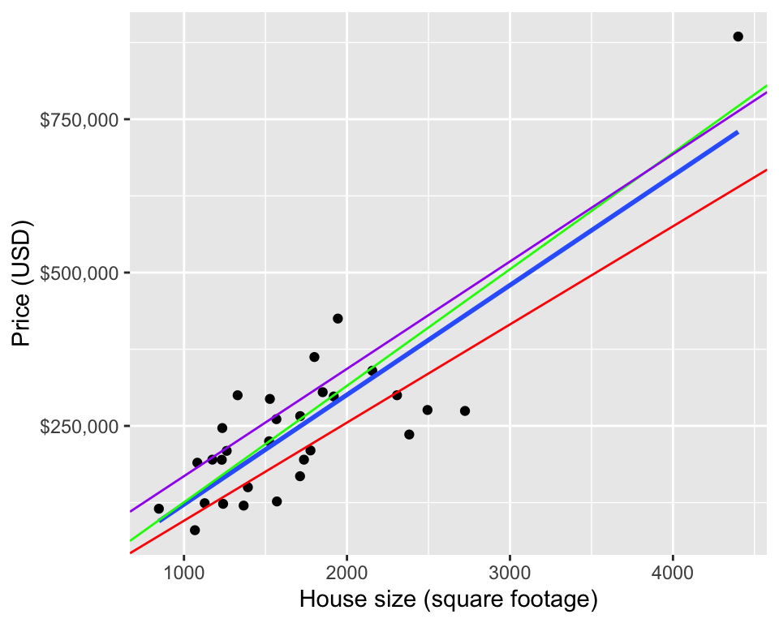
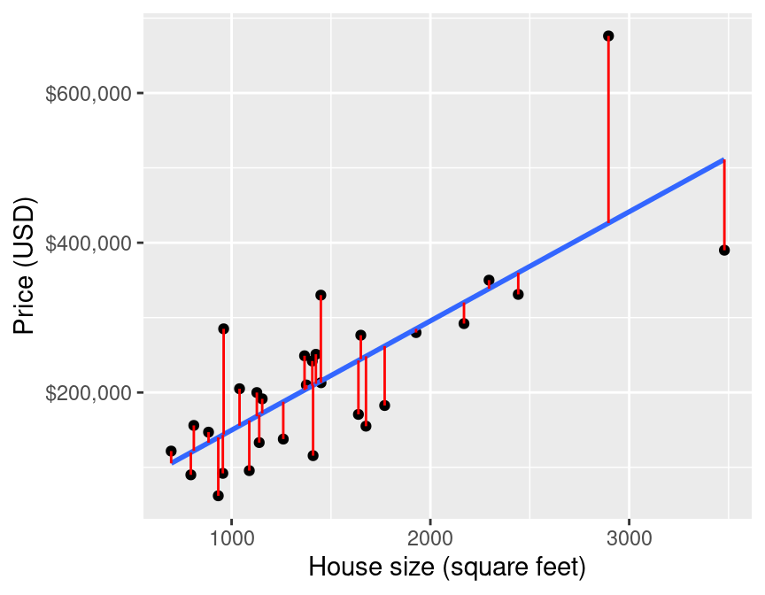
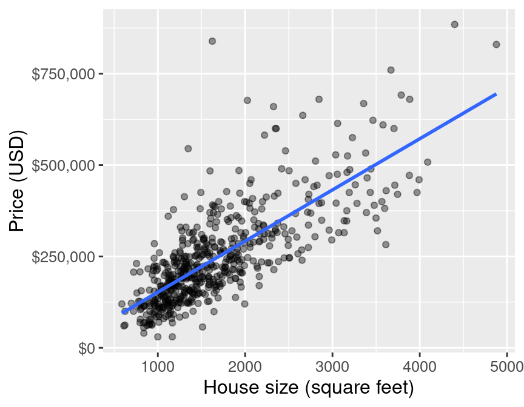
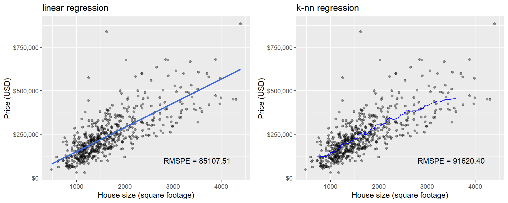

Chapter 9 Regression, continued
9.1 Overview
Introduction to linear regression models. We will also begin to compare k-nn to linear models in the context of regression.
9.2 Learning objectives
By the end of the chapter, students will be able to:
- In the context of k-nn regression, compare and contrast goodness of fit and prediction properties (namely RMSE vs RMSPE).
- In a dataset with 2 variables, perform simple ordinary least squares regression in R using
caret’strainwithmethod = "lm"to predict the values for a test dataset. - Compare and contrast predictions obtained from k-nearest neighbour regression to those obtained using simple ordinary least squares regression from the same dataset.
- In R, overlay the ordinary least squares regression lines from
geom_smoothon a single plot.
9.3 \(RMSE\) versus \(RMPSE\)
The error output we have been getting from caret to assess how well our k-nn regression models predict is labelled as RMSE for root mean squared error. The equation for calculating \(RMSE\) is shown in the previous chapter. So far, we have called this error \(RMSE\) in this textbook as well, however, in certain contexts the correct term becomes \(RMPSE\), which stands for root mean squared prediction error. The same formula is used to calculate \(RMPSE\) and \(RMSE\), however these separate terms exist to specify what the error is being calculated on. \(RMPSE\) is specifically referring to the error when predicting on future data (e.g., the validation set(s), or the testing set), not the training set. Whereas, \(RMSE\) is specifically referring to the error when predicting on the training data set and is an attempt to get at model goodness of fit on the data used to fit the model. From this point on in the course, we will be using the terms \(RMPSE\) and \(RMSE\) in their appropriate contexts.
9.4 Linear regression
k-nn is not the only type of regression, there are many, and one common and quite useful type of regression is called linear regression. Linear regression is similar to k-nn regression in that the target/response variable is expected to be quantitative, however, one way it varies quite differently is how the training data is used to predict a value for a new observation. Instead of looking at the \(k\)-nearest neighbours and averaging over their values for a prediction, in linear regression all the training data points are used to create a straight line of “best fit”, and then the line is used to “look-up” the predicted value.
For example, let’s revisit the smaller version of the Sacramento housing data set and the prediction case where we come across a new house we are interested in purchasing, and it is 2000 square feet! Its advertised list price is $350,000 should we give them what they are asking? Or is that overpriced and we should offer less?
To answer this question using linear regression, we use the data we have to draw the straight line of “best fit” through our existing data points:

Then we can use this line to “look up” the predicted price given the value we have for the predictor/explanatory variable (here 2000 square feet).

## [1] 287178.8Using linear regression on this small data set to predict the sale price for a 2000 square foot house we get a predicted value of $287178.80 USD. But wait a minute… How exactly does linear regression choose the line of “best fit”? Many different lines could be drawn through the data points, we show some examples below:

Linear regression chooses the straight line of “best fit” by choosing the line that minimzes the average vertical distance between itself and each of the observed data points. From the lines shown above, that is the blue line. What exactly do we mean by the vertical distance between the predicted values (which fall along the line of “best fit”) and the observed data points? We illustrate these distances in the plot below with a red line:

How do we assess the predictive accuracy of a linear regression model? We use the same measure of predictive performance we used with k-nn regression, \(RMPSE\) (note the use of \(RMPSE\) versus \(RMSE\) here as discussed in the first section of this chapter).
9.5 Linear regression in R using caret
We can perform linear regression in R using the caret package in a very similar manner to how we performed k-nn regression, using the train function. To do this, instead of setting method = "knn" we instead set method = "lm". Another difference is that we do not need to choose \(k\) in the context of linear regression and so we do not need to perform cross validation. Below we illustrate how we can use the caret package to predict house sale price given house size using a linear regression approach using the full Sacramento real estate data set:
As usual, we should start by putting some test data away in a lock box that we can come back to after we choose our final model, so let’s take care of that business now.
set.seed(2019) # makes the random selection of rows reproducible
training_rows <- Sacramento %>%
select(price) %>%
unlist() %>% # converts Class from a tibble to a vector
createDataPartition(p = 0.6, list = FALSE)
X_train <- Sacramento %>%
select(sqft) %>%
slice(training_rows) %>%
data.frame()
Y_train <- Sacramento %>%
select(price) %>%
slice(training_rows) %>%
unlist()
X_test <- Sacramento %>%
select(sqft) %>%
slice(-training_rows) %>%
data.frame()
Y_test <- Sacramento %>%
select(price) %>%
slice(-training_rows) %>%
unlist()Now that we have our training data, we fit our linear regression model:
lm_model <- train(x = X_train,
y = Y_train,
method = "lm") And finally, we predict on the test data set to assess how well our model does:
test_pred <- predict(lm_model, X_test)
lm_modelvalues <- data.frame(obs = Y_test, pred = test_pred)
lm_test_results <- defaultSummary(lm_modelvalues)
lm_test_results## RMSE Rsquared MAE
## 8.668847e+04 6.152298e-01 6.232425e+04Our final model’s test error as assessed by \(RMSPE\) is 86688.47. Remember that this is in units of the target/response variable, and here that is US Dollars (USD). Does this mean our model is “good” at predicting house sale price based off of the predictor of home size? Again answering this is tricky to answer and requires to use domain knowledge and think about the application you are using the prediction for.
And what does our final linear regression model look like when we predict across all possible house sizes we might encounter in the Sacremento area? There is a plotting function in the tidyverse, geom_smooth, that allows us to do this easily by adding a layer on our plot with the linear regression predicted line of “best fit”. The default for this adds a plausible range to this line that we are not interested in at this point, so to avoid plotting it, we provide the argument se = FALSE in our call to geom_smooth.
train_data <- bind_cols(X_train, data.frame(price = Y_train))
lm_plot_final <- ggplot(train_data, aes(x = sqft, y = price)) +
geom_point(alpha = 0.4) +
xlab("House size (square footage)") +
ylab("Price (USD)") +
scale_y_continuous(labels = dollar_format()) +
geom_smooth(method = "lm", se = FALSE)
lm_plot_final
9.6 Comparing linear and k-nn regression
Now that we have a general understanding of both linear and k-nn regression, we can start to compare and contrast these methods as well as the predictions made by them. To start, let’s look at the visualization of the linear regression model predictions for the Sacramento real estate data (predicting price from house size) and the “best” k-nn regression model obtained from the same problem:

What differences do we observe from the visualization above? One obvious difference is the shape of the blue lines. In linear regression we are restricted to a straight line, whereas in k-nn regression our line is much more flexible and can be quite wiggly. There can be an advantage to limiting the model to a straight line, as linear regression does, in that a straight line model is quite interpretable and can be defined by two numbers, the y-intercept and the slope. The slope is particularly meaningful for interpretation, as it tells us what unit increase in the target/response variable we predict given a unit increase in the predictor/explanatory variable. Additionally, because our model is restricted to a straight line, we can even use the mathematical equation for a straight line as a basis to write a mathematical expression of our model.
Remembering that the equation for a straight line is:
\[Y = \beta_0 + \beta_1X\] Where:
- \(\beta_0\) is the y-intercept of the line (the value where the line cuts the y-axis)
- \(\beta_1\) is the slope of the line
We can then write:
\[house\: price = \beta_0 + \beta_1house\: size\]
And finally, fill in the values for \(\beta_0\) and \(\beta_1\) from the straight line (we will show you how to get these from R next week) to get:
\[house\: price = -64542.2 + 175.9*house\: size\]
k-nn regression, as simple as it is to implement and understand, has no such interpretability from it’s wiggly line.
There can however also be a disadvantage to using a linear regression model in some cases, particularly when the relationship between the target and the predictor is not linear, but instead some other shape, such as curved or circular. In these cases the prediction model from a linear regression will have high bias, meaning that model/predicted values does not match the actual observed values very well. Such a model would probably have a quite high \(RMSE\) when assessing model goodness of fit on the training data and a quite high \(RMPSE\) when assessing model prediction quality on a test data set. On such a data set, k-nn regression may fare better. Additionally, there are other types of regression you can learn about in future courses that may do even better at predicting with such data.
How do these two models compare on this data set? On the visualizations above we also printed the \(RMPSE\) as calculated from predicting on the test data set that was not used to train/fit the models. The \(RMPSE\) for the linear regression model is less than the \(RMPSE\) for the k-nn regression model, and thus if were were comparing these in practice we would choose to use the linear regression model to make our predictions because of this (in addition to the fact the the linear regression model is more interpretable).
9.7 Additional readings/resources
- Pages 59-71 of Introduction to Statistical Learning with Applications in R by Gareth James, Daniela Witten, Trevor Hastie and Robert Tibshirani
- Pages 104 - 109 of An Introduction to Statistical Learning with Applications in R by Gareth James, Daniela Witten, Trevor Hastie and Robert Tibshirani
- The
caretPackage